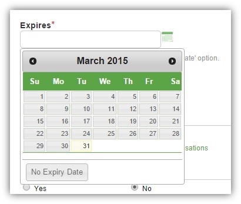

Forms are a main part of all the Greenlight Products and it is important that elements are consistant between each of the products. Forms should be in a single column where possible, or 2 columns where space is very tight.
Any forms that require a date to be entered should use as Acalendar icon, once clicked this uses a date picker.
In SA a file expirey date field is mandatory. The user has an option to either pick a date or click the No Expiry Date button in the datepicker.

The above option shows the style of the dae picker. The no expirey date is an addition option and not always present.Long lists can be broken down with background striping. This helps to avoid confuse selecting the wrong one.
When a form is submited it is validated and any invalid inputs are flagged with red text underneath. Please enter "Field Name".

Form buttons are Green for primary actions and grey for secondary actions.
Primary Actions appear before secondary actions.
Please read the buttons page for full details and examples.
See the Pen Form Elements by Greenlight Style Guide (@greenlightstyleguide) on CodePen.